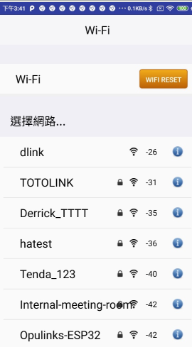

START UP example
QD APP example
QD APP example is an entry example application of QuickDev Framework. It includes creation of BLE service for BLE data input/out channel, Wi-FI provision via BLE, and OTA procedure via BLE. The QD APP example is located at examples\start_up
BLE service for data input/out
This BLE data input/output service implements the User Data Service to send or receive data via BLE. The BLE User Data Service is in \quick_dev\app_ref\ble_services\ud_svc.c.
User can issue request to device on phone app. The request will be packed as data packet and send to device. Once receiving data from phone app, the data will be transferred to the BLE Mangar through the LE task, and then the BLE Manager will transfer the data to the User Application via OPL_Service. Application will parse the data and perform indicated operation (ex. WiFi scan, WiFI connect…). Device might send data to phone app also. For example, report event or status to phone app, or response the request from phone app. The application of device will issue data sending request to BLE manager. The BLE manager will send data to peer side via the service created.
Wi-Fi provision via BLE
Wi-Fi provision via BLE provides a mechanism to set up Wi-Fi via BLE.
The Opulinks phone app provide WiFi setup function that user can perform WiFi provision via BLE to Opulinks device. User configurate Wi-Fi setup in phone app and send this request to the device (BLE peripheral) via BLE. When the phone sends Wi-Fi provision request to the device via BLE, the device utilize BLE Manager to receive this message. BLE Manager will transmit this message to application and then application will pass this message to BLE Application. BLE Application will parse this message and prepare different handler to handle different request (e.g., Wi-Fi scan request or Wi-Fi connect). These handlers would call Network Manager API to execute Wi-Fi process.
When excutig Wi-Fi process done, the device wants to respnose results to the phone. Bottom layer would send Wi-Fi process response results to BLE Application via Network Manager. BLE Application would organize these Wi-Fi process response results and then pass these organized message to BLE Manager. These messages would be sent to phone by BLE Manager.
Once the Wi-Fi provision via BLE is successful and Wi-Fi connection, it will automatically reconnect to the AP set by the wi-fi provision via ble after the disconnection.
- The following is a Wi-Fi provision via BLE example of step by step
Step1. Running Opulinks Utilities app
Step2. Press BLE Tool and turn on device
After user turn on device, DBG console will show device mac.
Step3. After press BLE Tool and turn on device, find device with the same MAC in APP scan result, and then press connect. Once connected, DBG console will show peer mac.
Step4. Press Wifi Setup
Once user press Wifi Setup, device will scan wifi and send result to APP.

Choose an ap (ex, TOTOLINK).

After user enter the password, it will pop up a window to tell user successful or failed.
OTA via BLE
- The following is OTA via BLE example of step by step
Step1. Running Opulinks Utilities app
Step2. Press BLE Tool and turn on device
After user turn on device, DBG console will show device mac.
Step3. After press BLE Tool and turn on device, find device with the name OPL_APP_xx:xx:xx:xx (xx:xx:xx:xx are the last four significant bytes of ble mac address) in APP scan result, and then press connect. Once connected, DBG console will show peer mac. App will show the function menu (Step4).
Step4. Press BLE OTA
Step5. Pres Choose OTA File
Step6 Choose OTA new firmware
If OTA successfully, App will show